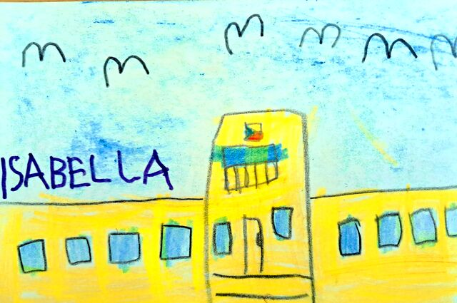
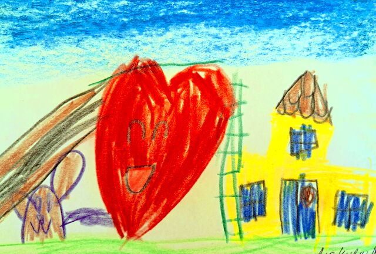
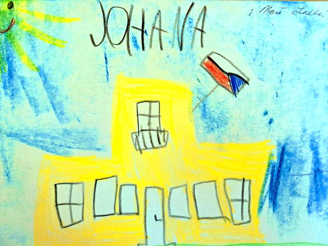
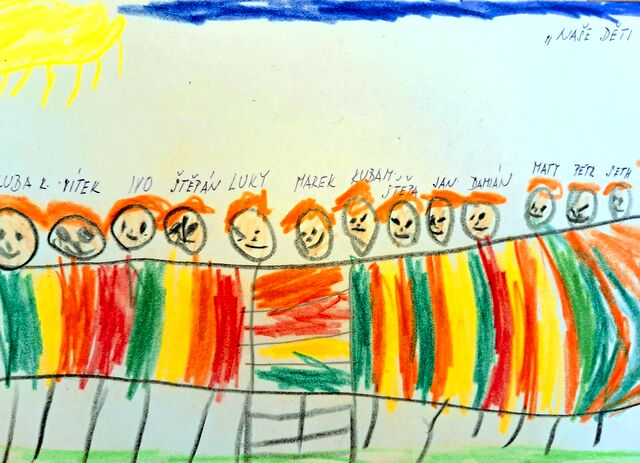
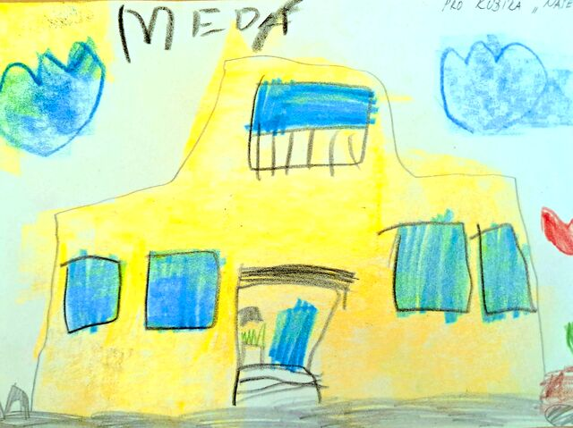
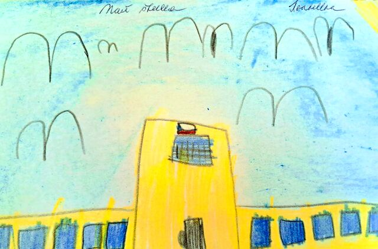
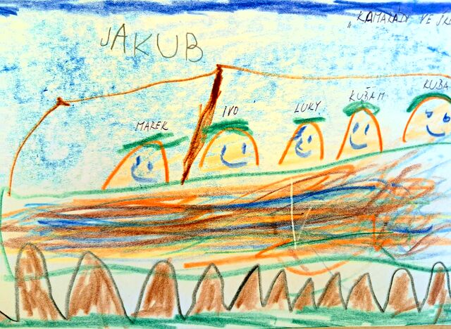
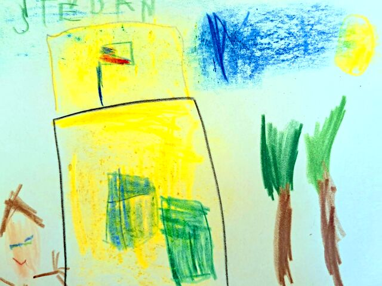

Fotogalerie
Nejdřív to nejcennější – jak naši školku nakreslily samy děti. Fotografie budovy a zahrady doplňujeme postupně, po profesionálním focení.
Očima dětí
Naše školka na dětských výkresech
Kresby vznikly ve třídách Zajíčků, Ježečků a Veverek. Skoro každé dítě si vybralo stejný motiv – žlutou budovu se spoustou oken.














Fotografie
Budova a zahrada
Fotogalerii postupně doplňujeme
Připravujeme profesionální fotografie heren, školní zahrady, keramické dílny a dalších míst, kde děti tráví den. Fotografie dětí na webu záměrně nezveřejňujeme – ukazujeme prostředí, detaily a ruce při práci.
Certifikáty, osvědčení a plakáty projektů – Mrkvička, MAP Brno V – najdete na stránce Projekty a spolupráce.
Nejlepší je vidět školku naživo
Domluvte si návštěvu – ukážeme vám třídy, zahradu i to, jak u nás vypadá běžný den.